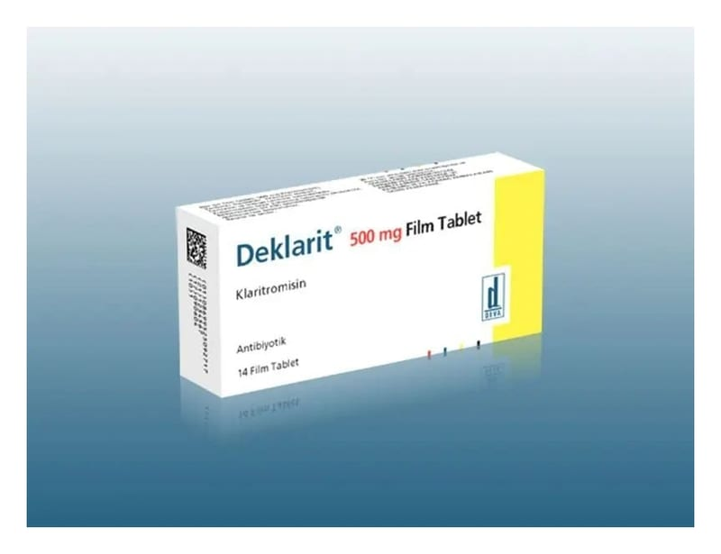

Deklarit 500 mg Film Kaplı Tablet, 14 Adet

Ne için kullanılır
KT · Bölüm 1DEKLARİT film tablet, sarı film kaplı, homojen görünüşlü, bir yüzü ortadan çentikli, dikdörtgen (oblong) tablettir. Bir kutuda 14 tablet bulunan blister ambalajlarda satışa sunulmuştur.
Her bir DEKLARİT film tablet, 500 mg klaritromisin içerir.
DEKLARİT film tablet (klaritromisin) makrolid adı verilen bir gruba ait yarı-sentetik bir antibiyotiktir. Klaritromisin, bakterilere karşı etkisini, duyarlı bakterilerde protein sentezini engel olarak gösterir.
DEKLARİT yetişkinlerde ve 12 yaşından büyük çocuklarda çeşitli mikroorganizmaların neden olduğu şu enfeksiyon hastalıklarının tedavisinde kullanılmak içindir:
Farenjit (yutak iltihabı), tonsillit (bademcik iltihabı), akut maksiller sinüzit (sinus iltihabı) gibi üst solunum yolu enfeksiyonları, Kronik bronşitte akut bakteriyel alevlenme, pnömoni (zatürre) gibi alt solunum yolu enfeksiyonları, Duyarlı mikroorganizmaların neden olduğu komplike olmayan, çeşitli deri ve yumuşak doku enfeksiyonları. Mikobakteri adı verilen özel bir bakteri türünün neden olduğu enfeksiyonlar.
DEKLARİT film tablet ayrıca aşağıdaki tablolarda da kullanılmaktadır: Bazı AIDS (edinilmiş immün yetmezlik sendromu) hastalarındaki, bir mikobakteri türüne (mikobakterium avium kompleksi) bağlı enfeksiyondan korunma amacıyla, On iki parmak barsağı ülseri nüksünün azaltılması için, H. Pylori adındaki bakterinin yok edilmesi (eradikasyonu) amacıyla, Diş enfeksiyonlarının tedavisinde.